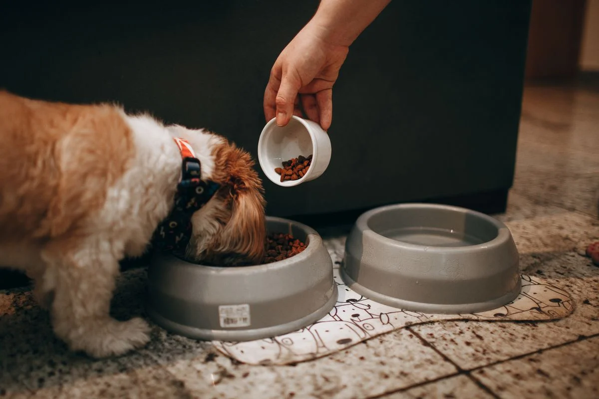
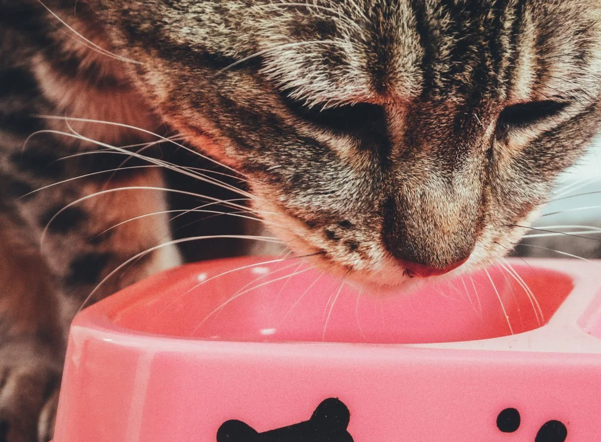
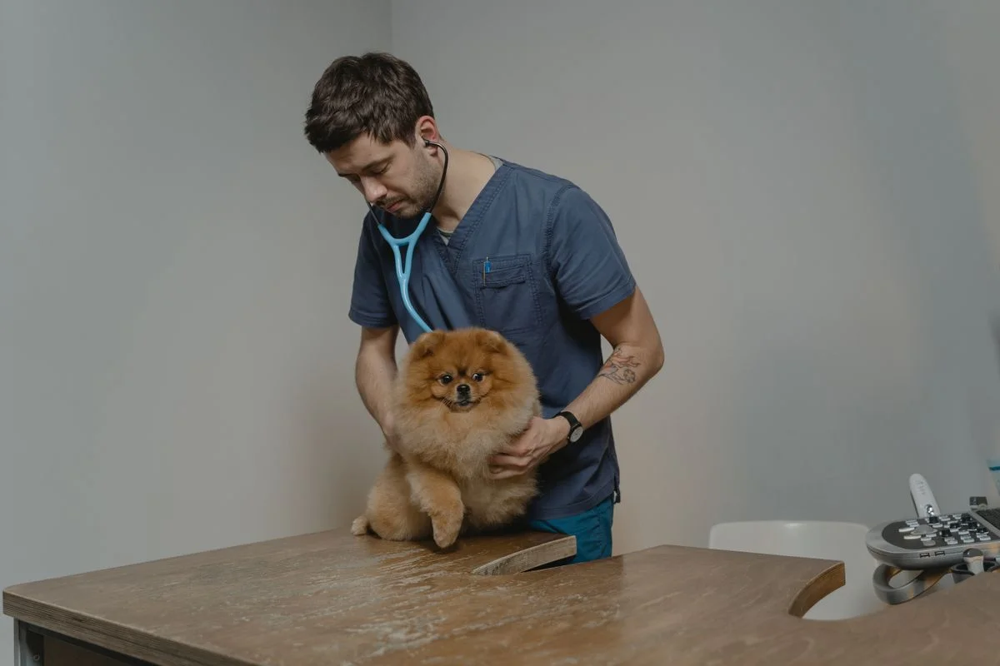

Este post contém links de afiliado. Podemos receber uma comissão em compras feitas através deles, sem custo adicional para você.
"Comedouro automático faz mal para o pet" é uma busca comum entre tutores que ainda não decidiram se vale a pena adotar o equipamento. A resposta curta é: o comedouro automático em si não faz mal, mas o uso incorreto — porções mal configuradas, falta de manutenção, ausência de supervisão — pode gerar problemas reais. Este artigo separa os riscos genuínos dos mitos e mostra como evitar cada um deles.
Key Takeaways
- O maior risco real não é o equipamento, é a configuração: porções erradas levam à sobrealimentação ou subalimentação.
- Falta de limpeza regular pode causar contaminação da ração, independente da qualidade do comedouro.
- Alguns pets desenvolvem ansiedade alimentar em torno do horário programado, especialmente no início do uso.
- Dependência total do equipamento sem plano de contingência é um risco de gestão, não do produto em si.
Para quem está começando a pesquisar o assunto, vale revisitar o guia completo de comedouro automático para pet antes de mergulhar nos riscos específicos abaixo.
Comedouros automáticos são, essencialmente, dosadores mecânicos ou eletrônicos de porção programada. Do ponto de vista técnico, eles não fazem nada que um tutor não faça manualmente ao servir a ração em horários fixos — a diferença é a automação. Os riscos associados ao equipamento quase sempre vêm de três fontes: configuração incorreta das porções, falta de manutenção e ausência de supervisão da rotina, não do princípio de funcionamento do produto.
Esse é o risco mais citado e, na prática, o mais evitável. Comedouros automáticos costumam medir porção em gramas ou em número de "porções" pré-definidas pelo fabricante, que nem sempre correspondem à necessidade calórica real do pet. Um tutor que simplesmente replica a quantidade que servia manualmente, sem ajustar para o número de refeições programadas no dia, pode acabar dobrando a quantidade de ração sem perceber.
Como evitar: calcule a quantidade diária total recomendada pelo veterinário antes de programar o equipamento, divida pelo número de refeições desejadas e confira o resultado pesando a porção liberada nos primeiros dias, não apenas confiando no número exibido no app ou no display.
Esse cuidado é ainda mais importante em gatos, cuja tendência a sobrepeso é conhecida — o comedouro automático ajuda no controle de peso do gato justamente quando as porções são configuradas com precisão, e pode se tornar parte do problema quando não são. A dimensão do problema não é pequena: um levantamento da FMVZ-USP com cães atendidos em São Paulo encontrou 14,6% de animais obesos e 40,5% com sobrepeso ou obesidade somados, o que reforça por que calibrar a porção — automática ou não — importa tanto quanto escolher o equipamento certo (Porsani, FMVZ-USP, 2019, retrieved 2026-08-21).

Resíduos de gordura da própria ração se acumulam no pote e no mecanismo dosador ao longo do tempo, criando ambiente propício para fungos e bactérias, especialmente em climas quentes e úmidos. Esse risco não é exclusivo do comedouro automático — qualquer recipiente de ração mal higienizado tem o mesmo problema — mas costuma ser negligenciado justamente porque o equipamento "cuida sozinho" da alimentação, e o tutor relaxa na parte de manutenção. Veja o passo a passo completo em como limpar o comedouro automático do pet.
Alguns pets, principalmente cães mais ansiosos, desenvolvem comportamento de expectativa nos minutos que antecedem o horário programado de liberação — ficam rondando o equipamento, latindo ou arranhando o pote. Esse comportamento tende a diminuir conforme o pet se acostuma com a rotina, mas em alguns casos pode se intensificar, especialmente se os horários forem alterados com frequência ou se o pet associar o som do motor a estresse. Mudança na rotina diária é apontada como um dos gatilhos comuns de estresse e ansiedade em pets, e manter horários previsíveis ajuda o animal a se sentir mais calmo — o que também explica por que a inconsistência na programação do comedouro tende a piorar, não melhorar, esse comportamento (Cães & Gatos, retrieved 2026-08-21).
Como evitar: mantenha os horários o mais consistentes possível, evite mexer na programação sem necessidade e, se a ansiedade persistir ou piorar após algumas semanas, vale conversar com um médico-veterinário especializado em comportamento antes de assumir que o problema é o equipamento.
O risco aqui não é do pet, mas da gestão da rotina pelo tutor. Falhas de energia, travamento do mecanismo dosador ou esgotamento de pilhas podem interromper a liberação de ração, e um pet que depende 100% do equipamento sem qualquer supervisão fica vulnerável nesses cenários. Modelos com bateria backup reduzem esse risco, mas não eliminam a necessidade de checagem periódica. Vale lembrar que, a partir de cerca de 12 horas de jejum, cães podem apresentar risco de hipoglicemia, o que torna uma falha prolongada do equipamento mais séria do que apenas "pular uma refeição" (PawChamp Journal, retrieved 2026-08-21).
Como evitar: tenha sempre alguém — vizinho, familiar, pet sitter — que possa verificar o equipamento a cada um ou dois dias em ausências mais longas, e prefira modelos com alerta de app ou notificação de falha quando o orçamento permitir.
Menos discutido que a sobrealimentação, mas igualmente real: alguns modelos de entrada têm calibração de porção pouco precisa, o que pode resultar em quantidade insuficiente de ração ao longo do dia, principalmente em pets de porte maior. Esse risco é maior em equipamentos muito baratos e sem histórico de avaliações consistentes.
Como evitar: pesar a ração liberada nos primeiros dias de uso e comparar com o valor esperado é a forma mais simples de identificar um problema de calibração antes que ele afete a saúde do pet.

Existem cenários em que o uso do comedouro automático pede mais cautela: pets com condições médicas que exigem horários rígidos e supervisão veterinária de perto, pets muito ansiosos com histórico de transtornos alimentares, ou lares onde ninguém pode checar o equipamento por longos períodos. Nesses casos, o comedouro automático pode ser usado como complemento, mas não como substituto total do acompanhamento humano.
Não por si só. O comedouro automático causa obesidade quando as porções são configuradas de forma incorreta ou quando o tutor não ajusta a quantidade conforme a necessidade calórica real do pet. Configurado corretamente, ele pode inclusive ajudar no controle de peso por padronizar as porções.
Alguns pets desenvolvem comportamento de expectativa perto do horário programado, especialmente nos primeiros dias de uso. Isso costuma diminuir conforme o pet se acostuma com a rotina, mas em casos de ansiedade mais intensa vale rever os horários ou consultar um veterinário comportamental.
Sim, desde que as porções sejam ajustadas com frequência conforme o filhote cresce, já que a necessidade calórica muda rápido nessa fase. É recomendável confirmar com o veterinário a quantidade diária ideal antes de programar o equipamento.
O pet pode associar o som do dosador ao momento da comida, o que é um comportamento condicionado normal, não um problema em si. O ponto de atenção é garantir que, em caso de falha do equipamento, exista um plano alternativo para alimentar o pet manualmente.
Comedouro automático não faz mal por natureza — os riscos existem, mas quase todos vêm de configuração incorreta, falta de manutenção ou ausência de plano de contingência, não do equipamento em si. Configurado com cuidado, limpo com regularidade e com supervisão mínima da rotina, ele tende a ser mais benefício do que risco para a maioria dos pets. Para entender o quadro completo antes de decidir, veja o guia completo de comedouro automático para pet.
Escrito por Nildo Alves. Veja nossa política editorial e como verificamos as fontes citadas neste artigo.
🐾 Confira o preço e a disponibilidade atual no Mercado Livre.
Ver no Mercado Livre →Link de afiliado: podemos receber uma comissão por compras feitas através deste link, sem custo adicional para você.
Nildo Alves — curadoria de produtos pet no Smart Pet Gadgets. Testa e pesquisa produtos para cães e gatos, cruzando especificações de fabricante com boas práticas veterinárias e dados de mercado.
Sobre o Smart Pet Gadgets · Contato · Política editorial e de afiliados